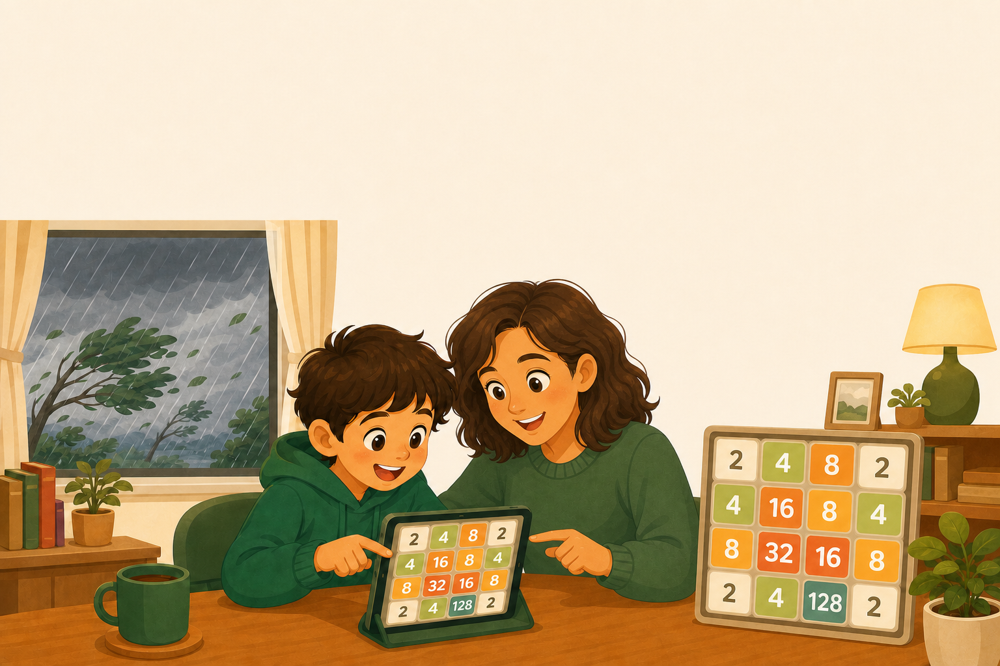
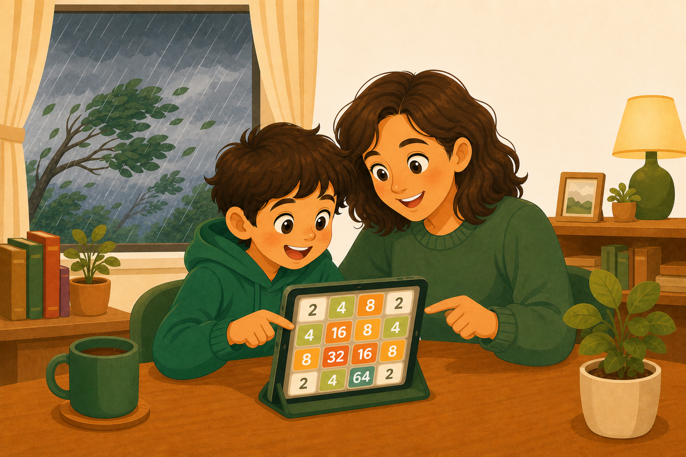

颱風天線上限定課 · 第 1 節
認識 2048 與成長󠇡的祕密
原版 2048 · 玩出指數與線性
中高年級 · 40 分鐘 · 在家動手玩
02
線上課默契
上課前，先約好四件事
默契一
開鏡頭、關麥克風
看得󠇡到你，但先靜音。
默契二
答案打留言區
老師問問題，就打進聊天室。
默契三
先收表情貼圖
貼圖會洗版，這節先收起來。
默契四
發言先舉手
老師點到你，再開麥。
03
給家長󠇡的話
給爸爸媽媽的話
孩子會一󠇢直盯著螢幕玩遊戲，先別擔心。2048 看起來在玩，其實藏著很多數學。
您可以這樣陪
讓孩子自己玩，卡關也沒關係
晚上一󠇢起挑戰，看誰先合出 1024

01
先認識它
2048
到底怎麼玩？
先搞懂規則，等一󠇡下就換你親手玩。
05
什麼是 2048
2048 的玩法
4×4 盤面
：16 格的小棋盤。
滑一󠇡下
：兩個一󠇡樣的數字相󠇡撞就合併。
目標
：一󠇡路合併，拼出 2048。
2
4
8
16
32
4
2
2
2
4
06
操作說明
怎麼動？兩種裝置都會
電腦版
用鍵盤方向鍵
按上下左右，方塊就往那邊滑。
手機 / 平板版
用手指滑
手指往上下左右滑，方塊就移動。兩個一󠇡樣的相󠇡撞，就合併成它們的和。
07
留言區即時問答
這一󠇡步，你會往哪滑？
2
2
4
8
1
上
2
下
3
左
4
右
先別動手，看這個盤面：往哪邊滑最好？打在留言區。
留言區打 1 / 2 / 3 / 4
1 ＝ 上 2 ＝ 下
3 ＝ 左 4 ＝ 右
08
分組時間
分組時間
試玩 2048
10 分鐘
進各組實際玩原版 2048，留言區回報你拼到多少分。
打開：numeracy-learn-kit.web.app/game/2048-basic/
09
試玩計時挑戰
分組進行中
目標：合出
64 或 128
10 分鐘
在自己的裝置上玩，先別急著往下噢。組內比比看誰拼最大。
02
成長󠇡的祕密
為󠇡什麼
越玩越大？
你剛剛撞到的，是一󠇡個叫「翻倍」的魔法。
11
合併＝相󠇡加
你玩到的：合併＝相󠇡加，而且一󠇡路翻倍
2
4
8
16
32
起點
2＋2
4＋4
8＋8
16＋16
每一󠇡步，都是上一󠇡步的
兩倍
。
12
存錢大挑戰
存錢大挑戰：10 天後，哪個撲滿比較多？
方案 A
每天存 10 元
穩穩地󠇡加
方案 B
第 1 天存 1 元，之後每天存兩倍
1 → 2 → 4 → 8 → …
在留言區打：你猜哪個多？A 還是 B
13
翻倍反超
第 6 天，翻倍反超！
方案 B（翻倍）
方案 A（每天 10 元）
10
1
第1天
20
3
第2天
30
7
第3天
40
15
第4天
50
31
第5天
60
63
第6天
70
127
第7天
第 6 天反超
一󠇢開始翻倍輸很多，但不󠇡到「一󠇡個禮拜」就反超——這就是
「指數」
的力量。
14
米粒傳說 · 預測
棋盤 64 格，第 1 格 1 粒、每格翻倍，最後一󠇢格要幾粒？
1
一󠇢碗飯
2
一󠇢卡車
3
一󠇡座山
4
比一󠇡座城市還多
在留言區打你猜的數字
傳說裡，國王覺得󠇡「不󠇡過幾粒米」就答󠇡應󠇡了。你覺得󠇡呢？
15
米粒傳說 · 一󠇢把尺
這麼大的數，怎麼想像？先找一󠇢把尺。
先立一󠇢把尺
一󠇢碗飯 ≈
2,000 多粒米
差不多就是棋盤的第 12 格
2×2×2×2×2×2×2×2×2×2×2
＝ 2,048
（11 個 2 連乘）
記住這把尺——往後我們就用「幾碗飯、幾年的米」來感覺這些大得󠇡誇張的數字。
16
米粒傳說 · 第 47 格
才到第 47 格，就等於全台灣一󠇢整年的稻米！
全台灣一󠇢年種󠇡的米 ≈
140 萬公噸
≈ 這一󠇢格
棋盤才走到第 47 格
第 47 格的米粒 ＝
2×2×2×…×2
46 個 2 連乘
≈ 70 兆 粒
第 12 格才一󠇢碗飯，只過了
35 格
，就變成全台灣一󠇢整年的米。
假設：每粒米 ≈ 0.022 克、台灣稻米年產約 140 萬公噸。
17
米粒傳說 · 總數揭曉
64 格全部加起來……
2×2×…×2
64 個 2 連乘
約
1,845 京
粒
＝ 18,446,744,073,709,551,615 粒米
約 500 萬倍
花蓮一󠇢整年種󠇡的稻米，要這麼多倍才夠
約 39 萬年
夠全台灣人從現在一󠇢直吃這麼久
這就是「一󠇢直翻倍」的力量——
連國王都賠不起
。
假設：每粒米 ≈ 0.022 克、台灣稻米年產約 140 萬公噸。
03
換你找訣竅
怎麼玩
才能拼更大？
再玩一󠇡次，這次邊玩邊找：有沒有什麼訣竅？
19
分組時間
分組時間
第二次玩・找訣竅
5 分鐘
回到原版再玩一󠇢場，組內討論怎樣拼更大，訣竅打留言區。
打開：numeracy-learn-kit.web.app/game/2048-basic/
20
第二次玩 · 找訣竅
分組進行中
邊玩邊想：
有什麼
訣竅
能拼更大？
5 分鐘
試試看：固定往幾個方向滑？大的數字放哪裡？5 分鐘後回來分享。
21
總結訣竅
玩完，一󠇢起歸納出兩個訣竅
256
128
64
32
2
4
8
16
訣竅一
把最大的放角落
整局把最大的數字鎖在同一󠇡個角，別讓它被推走。角落只有兩邊會動，最穩。
訣竅二
由大到小排好
從那個角開始，讓數字由大到小排成一󠇢排，別讓大的卡在中間，隨時都有得󠇡合併。
今天先記這兩個。下一󠇢節，還有更厲害的高手訣竅。
22
伏筆 · 接下一󠇢節
可是 16 格
一󠇡下就
塞滿
了……
一󠇢顆 2048 底下藏著好多顆 2、要合併上千次。光靠運氣夠嗎？下一󠇢節，談高手的訣竅。
第一節課，我們看到了遊戲裡的數學
合併＝相󠇡加、一󠇡路翻倍，這就是「指數成長󠇡」。下課時間，休息一󠇡下。
下一󠇢節，我們來看高手怎麼贏。